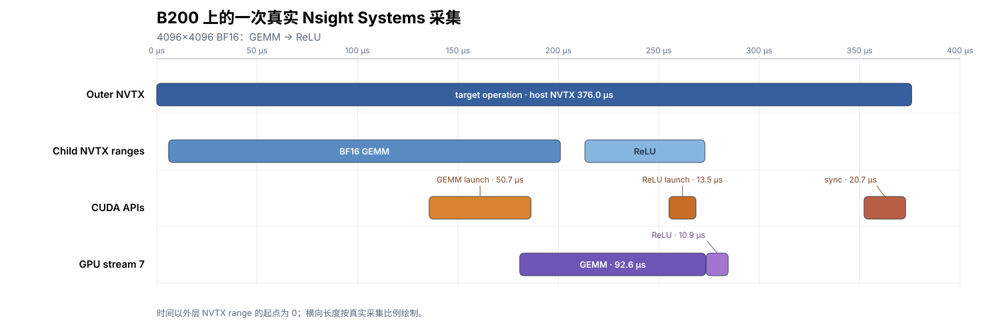

GPU Kernel 性能测量与分析#
优化 GPU kernel 时，需要分别回答两个问题：运行一次要多久，时间主要花在哪里。Benchmark 负责测前者，profile 用来分析后者。
一次 Python 调用不一定只对应一个 GPU kernel。它可能启动多个 kernels、提交内存拷贝，或者等待 GPU 完成工作。计时前要先确定被测 operation 包含哪些步骤，并让所有实现采用相同的边界。
Kernel 性能从何而来 介绍了如何用 roofline 判断性能受计算吞吐还是内存带宽限制。接下来讨论实验方法：如何确定计时范围、选择 warm-up 和 repeat，以及解读 profiler 报告。
区分性能测量与性能诊断#
这套流程中的工具各自回答不同问题：
工具 |
主要回答的问题 |
|---|---|
CUDA Events |
被测区间在 GPU stream 上经过了多长时间？Stream 是按提交顺序执行 GPU 工作的队列。 |
同步的 wall-clock timer |
从 host 发起一次调用到这次调用所需的 GPU 工作完成，经过了多长时间？ |
Proton（Triton 提供的 profiler） |
启动了哪些 GPU kernels、各被调用多少次，哪些 kernel 占用了主要时间？ |
Nsight Systems |
Host、streams、拷贝、kernels 和通信如何在时间线上重叠？ |
Nsight Compute（ |
选定的 kernel 内部在做什么，下一步应调查哪类硬件资源或等待？ |
IKET（可选） |
加入 kernel 内标记后，数据搬运、计算和写回等阶段何时 active、等待或重叠？ |
计时前先验证正确性#
性能计时前，先单独验证正确性：
构造有代表性的输入，并覆盖相关的边界情况。
运行被测实现并同步，确保 GPU 已经完成计算。
使用明确的 tolerance，将结果与 reference 比较。
如果 kernel 会在已有 output 上累加或原地修改输入，每次验证前都恢复相同的初始状态。
以自写 GEMM 为例，actual 是被测实现的输出，expected 可以先用 PyTorch 的 FP32 GEMM 计算，再转换成目标输出类型：
import torch
torch.set_float32_matmul_precision("highest")
actual = my_gemm(a, b) # 换成自己的实现
torch.cuda.synchronize()
expected = torch.mm(a.float(), b.float()).to(actual.dtype)
rtol = 1e-2 # 示例值；根据输出 dtype、累加方式和 shape 调整
atol = 1e-2
torch.testing.assert_close(actual, expected, rtol=rtol, atol=atol)
torch.set_float32_matmul_precision("highest") 避免这个 CUDA FP32 reference 使用较低的内部计算精度。示例中的 rtol 和 atol 分别控制相对误差与绝对误差；1e-2 只是可运行的起点，实际值要根据输出 dtype、累加方式、shape 和算子约定调整。同一组比较应使用相同的 reference 和 tolerance。
Reference 计算和结果比较不计入性能时间；状态重置是否计时，由下一节定义的 operation 边界决定。
明确计时边界#
计时前，先写清楚一次被测 operation 包含哪些工作。它可以只包含一个 kernel，也可以包含得到完整结果所需的全部 kernels、内存拷贝和状态重置。编译、输入构造、内存分配或数据格式转换是否属于这次 operation，也要明确说明。不同实现只有在测量相同工作时才能直接比较。
后文的 GEMM + ReLU 例子可以采用三种边界：只用 CUDA Events 包住 torch.mm，得到 GEMM 的 GPU stream 时间；用 Events 包住整个 run()，得到 GEMM + ReLU 的 GPU stream 时间；在调用 run() 前启动 CPU timer，并在调用后同步，得到一次 Python 调用的端到端时间。矩阵分配和 warm-up 默认位于这三种边界之外。
范围确定后，再选择计时方法：
CUDA Events 记录 GPU stream 执行到两个位置时的时间戳，适合测量一个 kernel 或整个 operator 在 device 时间线上的区间。区间内的 kernels、内存拷贝和 stream 空隙都会被计入。对于多 stream operation，所有参与计算的 streams 都必须在 start event 之后开始被测工作，并在记录 end event 前完成汇合。
同步的 wall-clock timer 从 host 发起调用前开始计时，在调用所需的 GPU 工作全部完成后停止。它还会计入 Python dispatch、CUDA launch 和等待 GPU 完成的时间，适合测量一次调用的端到端 latency。
例如，GPU 已经执行 start event，但 host 还没有提交下一个 launch 时，这段 stream 空闲时间仍会落在 CUDA Event 区间内。因此，CUDA Event 区间不一定等于 profiler 中某个 kernel 从开始到结束的执行区间。
测量 GPU 时间与单次调用延迟#
使用 CUDA Events 测量 GPU stream 时间#
CUDA launch 通常是异步的；未经同步的 CPU 计时可能在 GPU 完成前就已停止，主要反映 host 提交时间。PyTorch CUDA semantics 文档 也说明了这种行为。下面直接用 CUDA Events 测量当前 stream 上经过的时间。
先看一份可以直接运行的 CUDA Event benchmark。它在计时前分配矩阵，先执行 warm-up，再分五轮测量 FP16 GEMM，并报告五轮结果的中位数：
from statistics import median
import torch
a = torch.randn((2048, 2048), device="cuda", dtype=torch.float16)
b = torch.randn((2048, 2048), device="cuda", dtype=torch.float16)
c = torch.empty((2048, 2048), device="cuda", dtype=torch.float16)
def gemm():
torch.mm(a, b, out=c)
def measure_batch_ms(fn, calls):
"""返回连续 calls 次调用的平均 CUDA Event 时间，单位为 ms。"""
start = torch.cuda.Event(enable_timing=True)
end = torch.cuda.Event(enable_timing=True)
start.record()
for _ in range(calls):
fn()
end.record()
end.synchronize()
return start.elapsed_time(end) / calls
warmup_calls = 500
repeat = 100
rounds = 5
for _ in range(warmup_calls):
gemm()
torch.cuda.synchronize()
samples_ms = [measure_batch_ms(gemm, repeat) for _ in range(rounds)]
print(f"device: {torch.cuda.get_device_name()}")
print(f"calls per round: {repeat}")
print("round samples (ms):", [round(x, 4) for x in samples_ms])
print(f"median CUDA Event time: {median(samples_ms):.4f} ms")
measure_batch_ms 在当前 CUDA stream 中记录 start 和 end events，并用两者之间的时间除以调用次数。这样得到的是连续执行时每次 GEMM 的平均 GPU stream 时间。end.synchronize() 只是让 CPU 等到这轮 GPU 工作完成，以便读取 Event 结果。
warmup_calls=500 和 repeat=100 表示调用次数，rounds=5 表示五轮独立测量。这组值来自 B200 上的稳定性测试：50 次 warm-up 后结果仍持续下降，增加到 500 次后才趋于稳定；repeat=100 也比 repeat=10 稳定。测量其他 workload 时，先增加 warmup_calls，直到前几轮不再持续变化；若结果仍有较大波动，再增加 repeat 或 rounds。如果更长的运行反而使整体时间系统性变化，就要检查温度、功耗和时钟频率。
这段代码始终复用同一组矩阵，因此结果偏向有数据复用的 warm-cache 场景；是否真的命中 cache，还取决于本次计算反复访问的数据总量与硬件 cache 容量。
本书使用 TVM 的 tvm.tirx.bench.bench 统一处理 warm-up、重复计时和统计。传入的函数只启动已经准备好的实现，输入、输出和 workspace 均在计时前分配。与上面的 warm-cache 示例相比，bench 会在每次正式调用前写入一个 256 MiB buffer，尽量减少前一次调用留下的 L2 复用，再用独立的 CUDA Events 计时：
from tvm.tirx.bench import bench
# 这里复用上文的 gemm；分析自己的 TIRx kernel 时，换成对应的无参数 callable。
run = gemm
result = bench(
{"gemm": run},
timer="event",
warmup=25,
repeat=100,
rounds=5,
cooldown_s=1.0,
)
print(result["impls"]["gemm"]) # 五轮平均值，单位为 us
print(result["round_samples"]["gemm"]) # 每轮结果
warmup=25 和 repeat=100 是毫秒预算，Event timer 会根据短测结果换算调用次数。正式 Event 只覆盖被测调用；用于减少 L2 复用的 256 MiB 写入发生在 start event 之前。rounds=5 测量五轮，cooldown_s=1.0 在每轮前暂停一秒；impls 保存五轮平均值，round_samples 保存逐轮结果。预算和轮数仍按上面的稳定性标准调整，并对所有实现使用相同设置。
TIRx-kernels 的 run_bench 也使用这个 helper。未使用 distributed 模式时，省略 timer 会默认使用 Proton；需要 CUDA Event 区间时，应显式指定 timer="event"。对于会原地修改状态的 kernel，重复调用时仍要遵守前面的重置规则；若重置写在被测函数内，其时间也属于 operation。
测量一次调用的端到端时间#
如果关心的是从 Python 发起一次调用到 GPU 完成这次工作所经过的完整时间，可以使用同步的 wall-clock timer。下面继续测量前面已经定义并 warm-up 的 gemm()：
from statistics import median
import time
import torch
def measure_single_call_ms(fn, samples=20):
values = []
for _ in range(samples):
torch.cuda.synchronize() # 排除此前尚未完成的 GPU 工作
t0 = time.perf_counter()
fn()
torch.cuda.synchronize() # 等待本次调用的 GPU 工作完成
values.append((time.perf_counter() - t0) * 1e3)
return values
host_samples_ms = measure_single_call_ms(gemm)
print("single-call samples (ms):", [round(x, 4) for x in host_samples_ms])
print(f"median end-to-end time: {median(host_samples_ms):.4f} ms")
第一个同步确保计时开始前没有更早的 GPU 工作残留；第二个同步保证计时停止前，这次 GEMM 已经完成。每个 sample 只包含一次调用，因此结果包括 Python 调用、CUDA launch、GPU 执行以及等待完成的开销。前面的 CUDA Event benchmark 测量的则是连续调用时每次 GEMM 的平均 GPU stream 时间。
比较多个实现时，所有实现使用相同的计时方法和边界。如果同时报告这两种结果，可以分别命名为“CUDA Event GPU 时间”和“单次端到端时间”，让读者直接看出两个数字覆盖的范围。
进阶：测量多 stream operation#
一个 operation 把工作提交到多条 CUDA streams 时，计时 stream 需要连接每条分支的起点和终点。下面的 sin 和 cos 分别在两条 streams 上运行，等两条分支都完成后，再回到计时 stream 相加：
import torch
x = torch.randn(1 << 20, device="cuda")
left = torch.empty_like(x)
right = torch.empty_like(x)
output = torch.empty_like(x)
stream_left = torch.cuda.Stream()
stream_right = torch.cuda.Stream()
timing_stream = torch.cuda.current_stream()
start = torch.cuda.Event(enable_timing=True)
left_done = torch.cuda.Event()
right_done = torch.cuda.Event()
end = torch.cuda.Event(enable_timing=True)
def measure_operation_ms():
torch.cuda.synchronize()
start.record(timing_stream)
stream_left.wait_event(start)
with torch.cuda.stream(stream_left):
torch.sin(x, out=left)
left_done.record(stream_left)
stream_right.wait_event(start)
with torch.cuda.stream(stream_right):
torch.cos(x, out=right)
right_done.record(stream_right)
timing_stream.wait_event(left_done)
timing_stream.wait_event(right_done)
torch.add(left, right, out=output)
end.record(timing_stream)
end.synchronize()
return start.elapsed_time(end)
elapsed_ms = measure_operation_ms()
torch.testing.assert_close(output, torch.sin(x) + torch.cos(x))
print(f"multi-stream operation: {elapsed_ms:.4f} ms")
start 是两条分支的共同起点，left_done 和 right_done 分别标记两个分支的终点。计时 stream 等待这两个 completion events，执行最后的加法，再记录 end。wait_event 在 GPU 上建立依赖，CPU 可以继续提交后续工作；end.synchronize() 才让 CPU 等待这次测量完成。
事件关系可以写成：
timing stream: start ──────────── wait(left_done, right_done) ─ add ─ end
left stream: wait(start) ─ sin ─ left_done
right stream: wait(start) ─ cos ─ right_done
这段代码允许两条分支并发执行，实际重叠程度取决于 GPU 资源占用。Nsight Systems 时间线可以确认真实的执行关系。正式测量时，先调用若干次 measure_operation_ms() 完成 warm-up，再重复调用它收集多个单次样本，最后报告 median 和样本波动。
同一 stream 内的 PDL#
Programmatic Dependent Launch（PDL）用于显式启用该机制的自定义 CUDA 或 DSL launch path。Primary 和 secondary kernels 仍提交到同一条 stream；primary 发出 trigger 后，secondary 可以提前执行与 primary 结果无关的准备阶段，并在读取 primary 的结果前完成 PDL 规定的依赖同步。
primary: initial work ─ trigger ─ remaining work
secondary: preamble ─ wait ─ dependent work
计时时把 start 放在 primary launch 前，把 end 放在 secondary launch 后，完整 Event 区间就是这组 launches 的 GPU 时间。两条 kernel 时间可能部分重叠，因此 profiler 中两个 duration 的和可能大于完整 operation latency；实际重叠关系由 Nsight Systems 时间线确认。
PDL 提供并发执行的机会，运行时也可以选择串行执行，kernel 的正确性需要覆盖两种情况。上面的 torch.cuda.Stream 接口本身没有 PDL launch 参数；具体启用方式由自定义 CUDA/DSL 实现提供，参见 CUDA Programming Guide。
固定实验条件#
前面的示例测量的是输入已经分配、warm-up 已经完成后的重复调用。若研究首次调用或完整应用路径，应把 CUDA 初始化、JIT、autotuning 等相应步骤纳入计时边界，并与重复调用的结果分开报告。
每轮原始结果都应保留，并注明最终报告的是中位数还是平均值。如果结果随轮次持续变化，应继续检查 warm-up、温度和时钟状态。比较多个实现时，也可以交替测量顺序，让每个实现经历相近的设备温度与时钟状态。
缓存策略同样需要统一。手写示例反复使用同一组矩阵，结果偏向 warm-cache 和数据复用，但实际命中率仍取决于反复访问的数据总量与 cache 容量；TVM 0.26 的 Event 和 Proton timers 会在每次正式调用前写入一个 256 MiB buffer，以减少 L2 复用，且这次写入不计时。应选择符合目标应用的策略，并让所有实现保持一致。torch.cuda.empty_cache() 释放的是 PyTorch allocator 中未使用的 blocks，GPU L2 的内容仍由硬件 cache 策略管理。
比较不同实现时，还要对齐：
数值语义： 输入与输出的数据类型、布局、转置方式、对齐要求、累加精度、缩放、mask、epilogue、输出定义和误差阈值；
被测范围： 是否包含 allocation、数据转换、状态重置、辅助 kernels、通信和同步；
调优条件： workspace 上限、是否允许针对每个 shape 自动调优，以及各实现可使用的搜索预算。
此外还应记录 GPU、driver、CUDA、framework 与 compiler 版本，以及 dtype、shape、时钟和功耗设置。使用库实现作为 baseline 时，要记录库版本、所选算法和 workspace；自动调优可以放在计时区间之外，但搜索预算和最终配置仍属于实验条件。
由延迟换算吞吐率#
吞吐率等于约定的工作量除以延迟；计时器提供公式中的延迟。对于一个 \(M\times K\) 与 \(K\times N\) 的 GEMM，若延迟为 t_us 微秒，则：
TFLOP/s = 2 × M × N × K / t_us / 10^6
分子和计时边界必须对应同一份工作。例如，后文完整 GEMM + ReLU operation 的延迟是 105.152 μs；用 \(2\times4096^3\) 除以这个时间会得到约 1307 TFLOP/s，但它只能称为“按 GEMM 工作量计算的有效吞吐率（effective throughput）”，因为分母还包含 ReLU。要报告 GEMM kernel 自身的 TFLOP/s，计时区间也要只覆盖 GEMM。
性能表在给出 TFLOP/s、GB/s 或 tokens/s 时，也应保留原始延迟，并说明工作量如何计算。对于 attention 和 fused kernels，还需注明分子统计的是完整稠密问题、实际选中的元素，还是 kernel 真正执行的工作。相关公式和 roofline 分析见 Kernel 性能从何而来。
用 Proton 找出最耗时的 kernel#
从这里开始，baseline、Proton、Nsight Systems 和 Nsight Compute 都运行 appendix/nsys_example.py 中的同一个 operation：两个 \(4096\times4096\) BF16 矩阵先做 GEMM，再对结果做 ReLU。输入、中间结果和输出都在计时或采集前分配。脚本中的 operation 是：
def run():
with torch.cuda.nvtx.range("BF16 GEMM"):
torch.mm(a, b, out=c)
with torch.cuda.nvtx.range("ReLU"):
torch.clamp_min(c, 0, out=output)
进入任何计时或采集模式前，脚本会先执行一次 operation 并同步，再用 FP32 torch.mm 计算 reference、执行 ReLU、转换为 BF16，最后以 rtol=2e-2、atol=1e-2 比较实际输出。比较失败时命令会在开始 benchmark 或 profiler 之前报错；这次 preflight check 位于后面的 baseline 和采集范围之外。
前面的 2048×2048 FP16 代码用于讲解计时 API；下面换成这份 BF16 operation 后，不再混用两组 workload 的结果。
先记录无 profiler baseline#
在分析“时间花在哪里”之前，先测出正常运行时的完整 operation 时间：
python appendix/nsys_example.py \
--size 4096 \
--warmup-calls 500 \
--event-samples 20
500 次 warm-up 发生在正式计时前；之后，每个 sample 用一对 CUDA Events 包住一次 GEMM + ReLU。B200 上的一次实际输出为：
median=105.152 us, min=103.136 us, max=131.200 us
这里的 median 是后面判断代码修改是否真的变快时要回到的 baseline，min 和 max 用于观察样本波动。这份 baseline 覆盖完整的 GEMM + ReLU operation；后面的 profiler 表格来自独立采集，并分别列出单个 kernel。
用 Proton 比较 operation 中的 kernels#
Proton 可以查看每个 kernel 的调用次数、平均时间和累计时间。运行前先确认环境中已经安装与 TVM 兼容的 Triton；Proton 和 proton-viewer 随 Triton 提供。Viewer 还需要下面两个 Python 依赖：
python -m pip install pandas llnl-hatchet
脚本的 --proton-calls 模式复用同一个 run()，先 warm-up，再采集 100 次 operation，并生成 operator.hatchet：
python appendix/nsys_example.py \
--size 4096 \
--warmup-calls 500 \
--proton-calls 100
这里的 warmup-calls 和 proton-calls 都以调用次数为单位；bench 中同名的 warm-up/repeat 参数则使用毫秒预算。报告生成后运行：
proton-viewer --list operator.hatchet
proton-viewer --metrics time/ms,count --print-sorted operator.hatchet
proton-viewer --metrics avg_time/us,time/ms --print-sorted operator.hatchet
proton-viewer 会分别打印两张表。先在 count,time/ms 输出中用完整 kernel 名称确认调用次数和累计时间，再到 avg_time/us,time/ms 输出中找到同一行读取平均时间。选择目标时主要看 time/ms，因为它表示 100 次 operation 中该 kernel 累计占用的时间；avg_time/us 给出单次平均值。下面为了排版合并两张表并缩短 kernel 名称：
target_operation calls avg/us total/ms
├── GEMM kernel 100 87.00 8.700
└── ReLU kernel 100 11.71 1.171
先检查预期的两个 kernels 是否都出现、调用次数是否为 100，再比较累计时间。GEMM 占用的时间明显更多，因此选它作为后续深入分析的目标。交给 NCU 之前，先用 Nsight Systems 确认单次 operation 中的执行顺序和空隙，并关联对应的 host launch APIs。
这次手动 Proton session 保留正常的 cache 状态，与 bench(timer="proton") 在每次正式调用前写入 256 MiB buffer 的策略不同。这里用同一份 Proton 报告内的数值给 kernels 排序。实现之间的快慢仍看上面的 CUDA Event baseline；完整 operation latency 则取自包住整个 operation 的计时区间。
使用 Nsight Systems 分析应用时间线#
Proton 给出了汇总排名，但没有显示 kernels 的先后关系、空隙、拷贝或 host 等待。Nsight Systems 用时间线回答这些问题。
采集目标 operation 的时间线#
脚本的 --profile-once 模式先在 profiler 尚未启动时完成 warm-up，并等待这些工作结束；然后只在 cudaProfilerStart() 和 cudaProfilerStop() 之间提交一次 GEMM + ReLU：
def run_once_for_profiler(run, *, warmup_calls):
for _ in range(warmup_calls):
run()
torch.cuda.synchronize()
cudart = torch.cuda.cudart()
cudart.cudaProfilerStart()
with torch.cuda.nvtx.range("target operation"):
run()
torch.cuda.synchronize()
cudart.cudaProfilerStop()
这里的 NVTX range 用于在时间线中定位目标 operation。Range 内的同步确保两个 kernels 在停止采集前完成；cudaProfilerStart() 和 cudaProfilerStop() 只限定采集范围，不负责计时。
下面的命令运行这个脚本，并将报告写入 reports/target-timeline.nsys-rep：
mkdir -p reports
nsys profile \
--trace=cuda,nvtx \
--sample=none \
--cpuctxsw=none \
--capture-range=cudaProfilerApi \
--capture-range-end=stop \
--output=reports/target-timeline \
--force-overwrite=true \
python appendix/nsys_example.py \
--size 4096 \
--warmup-calls 500 \
--profile-once
--capture-range=cudaProfilerApi 只采集 profiler API 之间的区间，--trace=cuda,nvtx 记录 CUDA API、GPU activity 和 NVTX ranges。这里关闭 CPU sampling 与 context-switch tracing，让第一份报告先集中显示 CUDA 时间线；如果发现较长的 GPU 空隙，再采一份包含 host scheduling 或 OS runtime 信息的报告。
报告生成后，可以直接用 Nsight Systems GUI 打开时间线：
nsys-ui reports/target-timeline.nsys-rep
从时间线定位最耗时的 kernel#
下面的报告来自 NVIDIA B200，软件版本为 NVIDIA driver 595.58.03、CUDA 13.0、PyTorch 2.12.0+cu130 和 Nsight Systems 2025.6.3。

GPU stream 7 中的 7 是这次报告里的 stream 标识。两个 kernels 位于同一条 stream 上，所以按提交顺序执行。也可以从命令行提取下文使用的时间：
nsys stats \
--force-export=true \
--format=column \
--timeunit=us \
--report cuda_gpu_sum \
--report cuda_kern_exec_trace \
--report cuda_api_trace \
--report nvtx_gpu_proj_sum \
--report nvtx_pushpop_trace \
--report cuda_api_sum \
reports/target-timeline.nsys-rep
--force-export=true 会从当前 .nsys-rep 重新生成 SQLite 数据，避免误读同名旧文件。cuda_gpu_sum 汇总 GPU activities；cuda_kern_exec_trace 把 host launch API 与对应的 GPU kernel 关联起来，并给出 API Start、API Dur、Queue Dur、Kernel Start 和 Kernel Dur；cuda_api_trace 给出每次 CUDA API 的 start 和 duration。两个 NVTX reports 分别给出 range 在 GPU 上覆盖的区间和 host 端记录；cuda_api_sum 汇总 host CUDA API。nsys stats --help-reports 会列出当前版本的 reports；再运行 nsys stats --help-reports cuda_gpu_sum 等命令可以查看具体字段定义。
这条命令会依次打印多张表，按下面的顺序取数：
在
cuda_gpu_sum中比较各 GPU activity 的累计 duration，找出最耗时的 kernel。在
cuda_kern_exec_trace中读取每个 kernel 的 start 和 duration，并查看它对应的 host launch API。用end = start + duration算出结束时间；CUDA API 也采用同样的计算。用
ReLU start - (GEMM start + GEMM duration)计算两个 kernels 之间的空隙；这里使用 trace 时间戳和 duration 两列。最后查看
nvtx_*、cuda_api_trace和cuda_api_sum，解释 host range 和同步 API。判断一次同步是否真的在等待 GPU，要比较cuda_api_trace中同步 API 的开始时间与最后一个 kernel 的结束时间。
先看两个 kernels 的 GPU 执行时间：
GPU activity |
次数 |
GPU duration |
占所列 GPU 时长总和的比例 |
|---|---|---|---|
BF16 GEMM |
1 |
92.608 μs |
89.4% |
ReLU |
1 |
10.944 μs |
10.6% |
再把 GPU execution 与 host 上的 launch API 对应起来。Positive queue time 指 launch API 返回后，到 kernel 稍后才开始之间的时间；kernel 在 API 返回前已经开始时，该字段为空。Queue time 本身并不表示异常：GPU 正在执行其他工作时，新提交的 kernel 出现 queue time 很正常，不能只凭这一列把原因归结为某个 dependency。
Kernel |
API time |
Positive queue time |
GPU execution |
|---|---|---|---|
BF16 GEMM |
50.717 μs |
— |
92.608 μs |
ReLU |
13.474 μs |
5.074 μs |
10.944 μs |
按下面的顺序读：
先选目标。 GEMM 占两个 kernel 总执行时间的 89.4%，因此 NCU 的分析目标选为 GEMM。
区分 API time 和 GPU time。 GEMM launch API 在 host 上用了 50.717 μs，GPU 执行 GEMM 用了 92.608 μs；这是两个不同区间。ReLU 的 5.074 μs positive queue time 表示 launch API 返回后，它还等了一小段时间才在 GPU 上开始。
检查 kernels 之间的空隙。 两个 duration 相加为 103.552 μs；从 GEMM 开始到 ReLU 结束的 GPU span 为 103.776 μs，因此中间只有 0.224 μs 空隙。
按计时边界解释 host range。 图中的
target operationNVTX range 覆盖 Python/PyTorch dispatch、两次 launch 和同步 API。cudaDeviceSynchronize开始时 ReLU 已经结束，因此它的 duration 主要来自 host 侧的 API 开销；此时 GPU 执行已经完成。
区分累计耗时与最慢的单次执行#
“最耗时”可能指累计占时最大的 activity、同类调用中最慢的一次，或者时间线上的某个具体执行实例（invocation）。三种问题要看不同的列：
问题 |
查看位置 |
含义 |
|---|---|---|
哪类 GPU activity 累计最耗时？ |
|
同一汇总行内所有执行实例的 duration 之和，用于筛选累计占时最大的优化候选；只比较 kernels 时也可以使用 |
同一汇总行中最慢的一次有多长？ |
|
这一组执行实例中最大的 duration；它给出数值，但不定位具体是哪一次。 |
时间线上最慢的具体 kernel 执行是哪一次？ |
|
每一行对应一次 launch；结合 |
cuda_gpu_sum 的 Time 是该行 Total Time 占表中所有行 Total Time 之和的比例，不是 application wall-clock time 的占比，也不是 GPU utilization。并发 streams 的 activity 可能重叠，所以这些 duration 的和不一定等于采集区间经过的时间，累计占时最大的 activity 也不一定在端到端 critical path 上。先用汇总筛选候选，再用时间线识别 critical path 上的工作，最后用未启用 profiler 的 baseline 验证优化是否降低了 operation latency。本例每个 kernel 只执行一次，因此 Total Time、Max 和对应执行的 Kernel Dur 相同；多次执行时才需要按上表区分。
排查时间线中较长的 GPU 空隙#
一条 stream 上有空白，不等于整个 GPU 都处于 idle。例如：
Stream 7: Kernel A █████ Kernel B ████
Stream 8: Kernel C ██████████████████
Stream 7 在两个 kernels 之间没有工作，但 Kernel C 正在另一条 stream 上执行。先展开目标 GPU 的所有相关 streams 和 engines，并检查 kernels、memcpy/memset、通信以及其他已采集 context/process 的活动。只要有其他 activity 与该空隙重叠，这就不是 device-wide idle；但 Stream 7 仍可能位于 critical path，仍需判断这种重叠是否有效。只有当前采集可见的 GPU activities 在同一时段都为空，才能称为“这份报告可见范围内的 device-wide gap”；没有采集到的其他 process 或 context 仍可能在使用 GPU。若怀疑其他 CUDA context 正在与当前 workload 竞争 GPU，可以在单独的诊断报告中加入 --gpuctxsw=true 查看 GPU context switches。
完整判断树如下。最后三个时间段不是互斥分支，同一个 gap 中可能依次出现多个阶段：
某条 stream 上出现 gap
└─ 同一时段还有其他已采集的 GPU activity？
├─ 有：不是 device-wide idle；检查该 stream 是否在 critical path，重叠是否有效
└─ 没有：这是报告可见范围内的 device-wide gap
└─ 关联 gap 后的操作 B，并按时间戳分段
├─ A end → B API Start（若为正）：host 尚未进入 B 的 launch API
├─ gap ∩ [B API Start, B API end]：launch API 与 gap 重叠
└─ max(A end, B API end) → B start（若为正）：queue interval 位于 gap 内的部分
确认存在可见的 device-wide gap 后，找到 gap 后第一个 GPU 操作 B，并沿 correlation 回到实际提交它的 host thread。假设 trace 给出：
A end = 20 us
B API Start = 95 us, API Dur = 3 us, API end = 98 us
B Kernel Start = 100 us
这里的 GPU gap 是 \(100-20=80\) μs。其中 75 μs 发生在 B 的 launch API 开始之前，3 μs 与 launch API 重叠，API 返回后还有 2 μs 才开始执行 B；主要问题首先指向 host 没有及时提交 B。这个例子的时间线是：
A end ─────────── API Start ─────────── API end ─────────── B start
launch 前的 host 延迟 API interval reported queue interval
如果
API Start > A end，先调查A end到API Start：查看 Python/framework 工作、CPU 同步、实际 launch thread 是否在 CPU 上运行，以及工作是否由另一个 thread 提交。如果 launch API 与 gap 重叠，结合
API Dur、thread state 和调用栈，区分 API 内工作、CPU 调度延迟、runtime 阻塞或 profiler 开销。如果
API end < B start，只有max(A end, API end)到B start这一段同时属于 GPU gap 和报告的 queue interval。再检查同 stream 前序工作、event/stream dependency、cudaStreamWaitEvent、未采集 context，以及 GPU 调度或资源竞争。
Queue Dur 只测量 launch API 结束到 kernel 开始之间的正间隔；kernel 实际入队发生在 API 调用内部，所以它不是完整的排队时间，也不能单独证明某种 dependency，更不能直接等同于 GPU gap。本页 ReLU 的 Queue Dur 是 5.074 μs，而 GEMM 与 ReLU 之间的 GPU gap 只有 0.224 μs；大部分 queue interval 与 GEMM 执行重叠。
前面的轻量命令关闭了 CPU sampling 和 context-switch tracing，适合先寻找 GPU gap。本页 nsys_example.py --profile-once 只有 0.224 μs gap，采集区间也太短，不适合演示周期性的 CPU sampling。对能够稳定复现长 gap 的 workload，应覆盖足够多次重复或足够长的目标区间；在 Linux 上可以用下面的二次采集模板加入 OS runtime、thread scheduling 和 CPU backtrace：
nsys profile \
--trace=cuda,nvtx,osrt \
--sample=process-tree \
--osrt-threshold=1000 \
--capture-range=cudaProfilerApi \
--capture-range-end=stop \
--output=reports/gap-diagnosis \
--force-overwrite=true \
python path/to/gap_reproducer.py
这个模板假设 reproducer 用 cudaProfilerStart() 和 cudaProfilerStop() 标记目标区间；否则应移除两个 --capture-range 选项，或改用应用已有的 NVTX range。--sample=process-tree 收集 native CPU IP/backtrace samples，并同时把 --cpuctxsw 设为 process-tree 来记录 thread scheduling；osrt trace 记录可能长时间执行或让 thread 等待的 libc/POSIX runtime calls，--osrt-threshold=1000 会忽略短于 1000 ns（1 μs）的普通 OS runtime calls。Sampling 是周期性的，短 gap 可能没有任何 sample。对 Python 3.9 或更高版本，可另加 --python-sampling=true 查看 Python backtrace，或者用 NVTX/PyTorch function ranges 标出 framework 工作。
若只需确认 thread 何时在 CPU 上运行、何时被切走，并希望减少采集开销，可以改用 --sample=none --cpuctxsw=process-tree。若怀疑 cudaEventRecord 或 cudaStreamWaitEvent 形成依赖，可在单独的诊断报告中加入 --cuda-event-trace=true；这个选项需要 CUDA user-mode driver 12.8 或更高版本，而且可能在看似无关的 streams 间引入假依赖，发现 application behavior 改变时应关闭它。
CPU sampling 和 context-switch tracing 的支持范围与权限取决于平台；额外 tracing 也可能扰动很短的间隔，因此第二份报告用于诊断原因，最终性能仍以无 profiler baseline 为准。具体选项见 Nsight Systems User Guide，各 report 字段定义见 Nsight Systems Analysis Guide。
分析其他报告时，也先确认采集范围，再看所有 GPU kernels、copies、空隙和重叠，最后关联到 host launch 或同步 API。
使用 Nsight Compute 分析单个 kernel#
Nsight Systems 用来选择目标 kernel；NCU 用来解释这个 kernel 的硬件行为。下面先给出一套适用于不同 kernel 的阅读顺序，再用 B200 上的 BF16 GEMM 演示完整过程，最后解释相关字段和计算。
如何阅读一份 NCU 报告#
SM（Streaming Multiprocessor）是 GPU 上接收 thread blocks 并执行指令的计算单元。一个 warp 由 32 个 threads 组成，是 scheduler 选择和发射指令时使用的基本线程组；block 或 warp 已经分配到某个 SM、尚未执行结束时，称为驻留（resident）。
分析一份新的 NCU 报告时，按下面的顺序分析：
当前问题 |
最先查看的位置 |
这一步的作用 |
|---|---|---|
报告属于哪个 kernel？ |
报告头中的 kernel、device、grid/block，以及 Warnings/Errors |
确认筛选和采集结果 |
Grid 是否提供了足够多的 blocks？ |
|
判断 grid 是否提供足够的整机并行度 |
每个 SM 同时能驻留多少 blocks 和 warps？ |
|
计算理论与实测驻留量，并找出决定理论上限的资源 |
下一步先查哪一侧？ |
|
选择计算、访存或调度分支 |
Scheduler 能否持续找到可发射的指令？ |
|
比较已驻留、已就绪和实际发射的 warps；就绪工作较少时再查看主要等待状态 |
Grid Size 是这次 launch 提交的 block 总数。Waves Per SM 用这个总数除以整块 GPU 理论上可同时驻留的 block 数；1 表示两者相等，3.46 表示 grid 的 block 总数是全卡理论同时容纳量的 3.46 倍。这个容量比例用于判断 grid 是否有足够多的 blocks 覆盖整块 GPU，实际的 block 调度顺序不包含在该字段中。
各项 Block Limit 分别给出 registers、shared memory、threads 等单项资源允许每个 SM 驻留的 block 上限，其中最小值决定理论 block 上限。Theoretical occupancy 是按这些上限算出的最大驻留 warp 数占硬件容量的比例；achieved occupancy 是采集期间实际平均活跃 warp 数的比例。它们描述并发驻留量，是否影响执行速度还要结合 scheduler 指标。
SpeedOfLight 中的 Compute 表示最忙的 SM 计算路径，Memory 表示最忙的内存侧路径，DRAM 只看外部显存接口；三者都以各自的可持续峰值为分母。B200 的外部显存是 HBM，L2 是全 GPU 共享的 cache，L1/TEX 是 SM 一侧处理内存请求的路径。Memory 较高只说明某条内存侧路径繁忙，外部 HBM 是否接近饱和由 DRAM 字段判断。ComputeWorkloadAnalysis 中的 active cycles 表示流水线仍在处理工作的周期，Issue Slots Busy 表示 scheduler 实际使用了多少指令发射机会。
SchedulerStats 把 warps 分成几种状态：active warp 已经驻留且尚未结束；eligible（已就绪）warp 的下一条指令已经解码、依赖已经就绪，而且所需执行单元可用；issued warp 在当前周期实际发出了指令。确认目标 launch，并依次看完 grid、驻留量和 SpeedOfLight 后，再按结果选择下一组指标：
Compute 更接近峰值： 在
ComputeWorkloadAnalysis的Pipe Utilization (Elapsed Cycles)中打开Pipe Utilization (% of elapsed cycles)，找出 active cycles 最高的计算路径，再看同一 section 摘要中的Issue Slots Busy。一条路径长时间有操作在执行、发射槽却大多为空时，继续打开Scheduler Statistics→Warps Per Scheduler，解释较低的指令发射率。Memory 更接近峰值： 采集
MemoryWorkloadAnalysis、MemoryWorkloadAnalysis_Chart和MemoryWorkloadAnalysis_Tables。先在Memory Workload Analysis Chart→Memory Chart中沿 DRAM、L2 和 L1/TEX 查看数据流，再在Memory Workload Analysis Tables→Memory Tables中读取 throughput、read/write bytes、hit rate，以及 shared/local memory 字段。DRAM 也接近峰值时先调查外部 HBM 流量；DRAM 较低时则把重点移到 L2、L1/TEX、shared memory 或 local memory。这里的 local memory 是每个 thread 私有的地址空间，其物理流量由 L1/L2 cache 和外部显存层级承载。Compute 和 Memory 都低： 先用 grid 和 waves 判断这次 launch 是否提供了足以覆盖 GPU 的 blocks。Blocks 不足时，检查 grid、block、cluster 配置，或把工作拆成更多 blocks；blocks 足够时，再查看
SchedulerStats。有 active warps 却几乎没有 eligible（已就绪）warps 时，再用WarpStateStats查看它们在等数据、同步还是其他依赖。Compute 和 Memory 都高： 分别展开两侧，各自找出一个具体候选，再通过只改变一个因素的实验判断哪一项真正影响 kernel 时间。
MemoryWorkloadAnalysis 汇总整条 kernel 在 DRAM、L2、L1/TEX 和其他内存路径上的流量与 cache 行为。某一条 load 的具体依赖还要用 SourceCounters 把采样到的 stall 和指令活动映射到 SASS（GPU 机器指令）或源码位置。
“高”和“低”要结合当前 GPU、workload 和同一份报告判断。当报告已经指向一处可修改的代码，并且能够写出修改后预期变化的指标和 latency 时，这一轮分析就形成了可检验的假设。范围仍然过宽时，再沿上面的分支采集下一组 section。
完整示例：分析 B200 BF16 GEMM#
1. 采集第一份 basic 报告#
继续使用脚本的 --profile-once 模式。应用在采集范围内提交一次 GEMM，再提交一次 ReLU；NCU 等待这个范围开始，并只筛选 GEMM：
mkdir -p reports
ncu \
--config-file off \
--profile-from-start off \
--kernel-name 'regex:.*nvjet_sm100.*' \
--launch-count 1 \
--set basic \
--replay-mode kernel \
--cache-control all \
--clock-control boost \
--pipeline-boost-state stable \
--export reports/bf16-gemm-basic \
--force-overwrite \
python appendix/nsys_example.py \
--size 4096 \
--warmup-calls 500 \
--profile-once
几个关键选项分别控制采集范围、目标、指标和采集条件：
--profile-from-start off让 NCU 等待脚本调用cudaProfilerStart()。--kernel-name筛选名称包含nvjet_sm100的 kernel；--launch-count 1为第一个匹配的 launch 生成一份结果。筛选表达式来自前面的时间线，分析其他程序时要换成实际名称。--set basic收集启动配置、occupancy 和高层吞吐率等第一轮所需指标。--replay-mode kernel允许 NCU 为收集硬件计数器而重放选中的 GEMM；--cache-control all在 replay 前清理 NCU 可控制的 cache；其余两个选项控制采集期间的时钟和 pipeline boost 状态。本例的 GEMM 可以独立重放，因此适合 kernel replay；涉及跨 kernel 依赖或并发时，应选择能够保留所需 application 或 range 状态的 replay mode。
这里的“一次 GEMM”指应用提交一次 launch。为了收集所需的硬件计数器，NCU 仍可能在内部重放这次 GEMM。500 次 warm-up 位于采集范围外，可避开初始化和 lazy loading；NCU 的 cache control 随后会改变正常的 warm-cache 条件。
在 GUI 中打开报告：
ncu-ui reports/bf16-gemm-basic.ncu-rep
终端中也可以查看 Details 页：
ncu --import reports/bf16-gemm-basic.ncu-rep \
--page details \
--print-details all \
--print-metric-name label-name
其他筛选条件和采集选项见 Nsight Compute CLI 文档。如果命令报告 ERR_NVGPUCTRPERM，请按照 NVIDIA 的 counter permission 指南 配置权限，或请系统管理员开放访问。
2. 用 basic 报告确定下一步查什么#
先确认报告头中的设备、kernel 名称、grid/block 和 warnings。它们与目标 launch 一致后，再看下面三组字段：
|
本例的下一步 |
|---|---|
|
Grid 足以覆盖整块 GPU，继续看单个 SM 上的并发工作量 |
registers 和 shared memory 的 |
每个 SM 理论上最多驻留 8 个 warps；实际平均活跃 warp 数更低，后续用 scheduler 指标查看指令就绪情况 |
Compute 77.74%，Memory 38.71%，DRAM 12.88% |
Compute 最接近自身峰值，先展开计算侧；整机聚合 HBM throughput 仍有较大余量 |
先解释 wave。当前资源限制只允许每个 SM 驻留 1 个 block，这台 B200 有 148 个 SM，所以全卡的理论同时容纳量是 148 个 blocks。整张 grid 有 512 个 blocks，\(512 / 148 = 3.46\)，也就是 grid 的工作量为这份理论容量的 3.46 倍。这个计算只用于解释 NCU 给出的容量比例；本例使用 thread-block clusters，分析时以报告中的 Waves Per SM = 3.46 为准。由此可以确认 grid 中有足够多的 blocks 覆盖全卡。
再看 occupancy。B200 每个 SM 最多驻留 2,048 个 threads；一个 warp 包含 32 个 threads，所以硬件上限是 64 个 warps。本例的启动配置每个 SM 理论上最多驻留一个 256-thread block，即 8 个 warps，因此 theoretical occupancy 为 \(8 / 64 = 12.50\%\)。这是相对于硬件容量较低的理论驻留并发度。Achieved Occupancy = 8.97% 是采集期间实际平均活跃 warp 数占同一硬件容量的比例，低于 12.50% 的理论上限。本轮先用 theoretical occupancy 确认一个 SM 的多个 schedulers 合计最多有 8 个 resident warps，再用 SchedulerStats 查看平均分到每个 scheduler 的 warps 中有多少已经就绪。
最后看吞吐率。Compute 比 Memory 更接近各自峰值，所以先进入计算分支。compute-bound 的含义更强：继续提速最终受到计算单元吞吐上限约束。basic 在这里给出初始方向；后续报告显示指令发射机会很少，而且绝大多数调度周期没有 eligible（已就绪）warp，因此此时直接贴上 compute-bound 标签会漏掉关键线索。
综合三组字段，本例的 grid 足以覆盖全卡，每个 SM 理论上可供调度的 warps 较少，计算侧又最接近自身峰值。下一份报告同时展开计算流水线并采集 scheduler 指标。
3. 沿计算分支采集后续指标#
下面在一次 run 中同时采集三个 sections；阅读顺序是 ComputeWorkloadAnalysis → SchedulerStats → WarpStateStats。分析新的 kernel 时，可以根据前一组结果决定是否追加下一组。
ncu \
--config-file off \
--profile-from-start off \
--kernel-name 'regex:.*nvjet_sm100.*' \
--launch-count 1 \
--section ComputeWorkloadAnalysis \
--section SchedulerStats \
--section WarpStateStats \
--replay-mode kernel \
--cache-control all \
--clock-control boost \
--pipeline-boost-state stable \
--export reports/bf16-gemm-followup \
--force-overwrite \
python appendix/nsys_example.py \
--size 4096 \
--warmup-calls 500 \
--profile-once
这是一次独立的 NCU run。两份报告中的百分比可能有小幅波动，例如 77.74% 变成 78.39%，这个差值不表示性能发生了变化。前一份 basic 报告用于选择调查入口，下面的 follow-up 报告则用同一次采集中的计算、scheduler 和 warp-state 指标收窄原因。
4. 按顺序读取三组指标#
先在 ComputeWorkloadAnalysis → Pipe Utilization (Elapsed Cycles) → Pipe Utilization (% of elapsed cycles) 中看 active-cycle 视图。Tensor (FP) 对应浮点 tensor 运算路径，TMEM (Tensor Memory) 是为 tensor 运算服务的片上内存路径；TMEM 与外部 HBM/DRAM、负责异步搬运的 TMA 都是不同硬件。它们在约 78% 的时钟周期里处于 active 状态，而同一 section 摘要中的 Issue Slots Busy 只有 3.20%。多周期操作发射后可以让流水线持续 active，因此计算路径经常被占用和新指令发得很少可以同时出现。
接着打开 Scheduler Statistics → Warps Per Scheduler，找出新指令为什么发得少。每个 scheduler 平均有 1.44 个尚未结束的 active warps，其中只有 0.04 个 eligible（已就绪）warp；这里的 0.04 是平均 warp 数。No Eligible 的分母只包括这个 scheduler 所属 SM subpartition 中至少有一个 warp 尚未结束的周期；No Eligible = 96.11% 表示在这些周期中，96.11% 的周期找不到 eligible warp。到这一步，3.20% 的低发射率已经有了解释：工作虽然驻留在 SM 上，大部分时间却没有可以继续执行的 warp。
最后打开 Warp State Statistics → Warp State (All Cycles)，查看这些 warps 在等什么。一个 warp 在某种状态停留一个时钟周期，记作 1 个 warp-cycle。本例每条 issued warp instruction 对应 37.00 个 warp-cycles，其中 32.11、约 87%，归入 Long Scoreboard。这个 87% 是按已发射 warp 指令归一化后的 warp-state 周期占比，并非 kernel 执行时间占比。Scoreboard 是硬件记录前序操作结果是否就绪的依赖表；Long Scoreboard 表示下一条指令仍在等待由 L1TEX 处理的某项内存操作完成。L1TEX 位于 SM 一侧，负责处理 global、local、surface 和 texture memory 请求；请求最终可能由 L1、L2 或 DRAM 提供数据，因此这个字段无法单独确定等待发生在哪一级存储。MemoryWorkloadAnalysis 用于查看整条 kernel 的 L1、L2 和 DRAM 聚合行为；具体 load 则在 SourceCounters 的 SASS/源码视图中继续定位。
把三份 section 接起来，得到下面这条证据链：
tensor/TMEM 路径经常 active
→ scheduler 很少发出新指令
→ 多数周期没有 eligible（已就绪）warp
→ 最主要的等待来自 Long Scoreboard
所以先查 L1TEX 相关的数据依赖。每个 SM 理论上最多驻留 8 个 warps，这可能让数据等待更难被其他工作覆盖。上一份 basic 报告中的 DRAM Throughput = 12.88% 表明整机聚合 HBM 带宽没有接近饱和；它仍允许个别请求访问 DRAM 并产生较长延迟。当前调查顺序是先看数据依赖，再看 Tensor Core 吞吐率是否构成下一层限制。当前的 nvjet GEMM 来自库实现，下一步可以采集 MemoryWorkloadAnalysis，比较整条 kernel 在 L1、L2 和 DRAM 上的聚合流量、throughput 与 cache 行为。
换成自己编写的 kernel 后，这份报告给出两个可以分别尝试的方向：
增加驻留 warps： 调整 tile、block 或资源用量，让一个 SM 能同时驻留更多工作。
缩短数据依赖等待： 保持驻留数量不变，把 load 或预取提前，或者缩短依赖链。
具体修改方法和验证步骤放在后面的“用代码修改检验假设”中。
字段计算、单位与边界#
主线已经给出了阅读顺序和本例结论。下面只保留完整字段、计算过程、指标单位和容易误读的边界，分析其他 kernel 时可以按需查阅。
LaunchStats 与 Occupancy#
LaunchStats 中与本例有关的完整启动字段如下：
字段 |
本次报告中的值 |
|---|---|
|
512 blocks |
|
256 threads |
|
4 blocks |
|
3.46 |
Block Size = 256表示每个 block 有 256 个 threads，即 8 个 warps；稍后用它计算 occupancy。Cluster Size = 4表示每 4 个 blocks 组成一个 thread-block cluster，整张 grid 有 128 个 clusters；cluster 的 blocks 会按硬件支持的布局共同调度。对于包含本例在内的 cluster launch，直接读取 NCU 的
Waves Per SM；需要在代码中计算可驻留 clusters 时，使用cudaOccupancyMaxActiveClusters。
每个 block 的资源用量位于 LaunchStats：
字段 |
本次报告中的值 |
|---|---|
|
255 |
|
213.28 KB |
这些资源最终允许的驻留数量位于 Occupancy：
字段 |
本次报告中的值 |
|---|---|
|
1 block / SM |
|
1 block / SM |
|
12.50% |
|
8.97% |
一个 block 驻留到 SM 时，硬件会为它保留所需的 registers 和 shared memory。根据 NVIDIA Blackwell Tuning Guide，B200 的每个 SM 有 65,536 个 32-bit registers、228 KB shared memory，最多驻留 2,048 个 threads。
Registers Per Thread = 255。一个 block 有 256 个 threads，因此约需 \(255 \times 256 = 65{,}280\) 个 registers，几乎占满一个 SM 的 register file。两个 blocks 需要 130,560 个，已经超过 65,536。Dynamic Shared Memory Per Block = 213.28 KB。一个 block 已经使用了 228 KB 上限中的绝大部分；两个 blocks 至少需要 426.56 KB，也无法同时驻留。Block Limit Registers = 1和Block Limit Shared Mem = 1正是前两项计算的结果：只看 registers 或只看 shared memory，任意一项资源都只允许每个 SM 驻留一个 block。NCU 的精确计算还会考虑资源分配粒度和驱动占用的 shared memory。Achieved Occupancy = 8.97%。这是采集期间实际平均活跃的 warps 占硬件上限的比例。它低于 12.50%，说明实际执行期间未始终保持理论驻留上限；它衡量驻留并发度，与“达到峰值性能的百分比”采用不同定义。
SpeedOfLight 的分母与 Duration#
SpeedOfLight 指标组给出下面四个字段：
字段 |
本次报告中的值 |
|---|---|
|
95.30 μs |
|
77.74% |
|
38.71% |
|
12.88% |
Duration 只在各自的 profiler run 中解读：这次 NCU 采集为 95.30 μs，另一轮 Nsight Systems 采集为 92.608 μs。实现之间的性能比较采用无 profiler 的 CUDA Event baseline。NCU 还会控制时钟、清理 cache，并可能 replay 或串行化 kernel；详见 NCU 的 workload-duration 说明。
三个 throughput 百分比分别使用各自的硬件峰值作为分母，彼此不能相加，也不能当作执行时间占比。Nsight Compute Profiling Guide 给出了 throughput metric 的组成规则。
计算流水线、scheduler 与 warp 状态#
Compute Throughput Breakdown 字段#
报告位置是 SpeedOfLight → GPU Throughput Breakdown → Compute Throughput Breakdown：
字段 |
本次报告中的值 |
|---|---|
|
77.74% |
|
77.48% |
|
77.42% |
|
1.36% |
|
1.10% |
|
0.61% |
Mem Tensor是 Blackwell 的 tensor-memory 相关片上路径。外部数据存放在 DRAM/HBM，异步多维搬运由 TMA 负责；这三个名称指向不同的硬件路径。77.74% 表明Mem Tensor是这份报告中最忙的计算侧组成项。Pipe Tc和Pipe Tensor是 NCU 报告中的两条不同流水线计数器。它们都在约 77%，与 BF16 GEMM 大量执行 tensor MMA 相关工作相符；两项可能覆盖重叠的硬件活动，需要分别解读，直接相加会重复计算。Pipe Alu主要对应通用整数与逻辑运算，Pipe Fma覆盖普通 FP32 算术和部分整数乘加操作。它们分别只有 1.36% 和 0.61%，说明这个 GEMM 没有接近这些路径各自的峰值。Pipe Tma对应 Tensor Memory Accelerator 的异步数据搬运路径。1.10% 表示 TMA 距离自身峰值较远；数据供应还涉及 TMEM、cache、shared memory 和依赖延迟，需要结合相应指标判断。
Pipe Utilization 的两个分母#
ComputeWorkloadAnalysis 摘要中的 Issue Slots Busy 为 3.20%。Pipe Utilization 的两个完整视图名称分别是 Pipe Utilization (% of elapsed cycles) 和 Pipe Utilization (% of peak instructions executed over elapsed cycles)。
把同一条流水线放在一行后，两种视图的差异会更直观：
流水线字段 |
Active-cycle 视图 |
Instruction-rate 视图 |
|---|---|---|
|
78.39% |
0.04% |
|
78.12% |
0.38% |
|
78.07% |
0.61% |
两个视图采用不同分母，用于对照流水线占用周期和指令执行率；它们之间不做加减。
SchedulerStats 的完整字段#
报告位置是 Scheduler Statistics → Warps Per Scheduler：
字段 |
本次报告中的值 |
|---|---|
|
16 |
|
2.00 |
|
1.44 |
|
0.04 |
|
0.04 |
同一 section 的摘要还给出 No Eligible = 96.11%。
GPU Maximum = 16 是每个 scheduler 的硬件容量上限；Theoretical = 2.00 来自本 kernel 每个 SM 理论上最多驻留的 8 个 warps 除以 4 个 schedulers。
WarpStateStats 的归一化单位#
一个 warp 在某种状态中经历一个周期记作一个 warp-cycle；4 个 warps 同时经历一个周期，就记作 4 个 warp-cycles。NCU 再用已发射的 warp 指令数对这些周期归一化。报告摘要给出第一项，Warp State (All Cycles) 表给出第二项：
字段 |
本次报告中的值 |
|---|---|
|
37.00 warp-cycles / issued instruction |
|
32.11 warp-cycles / issued instruction |
本例每发射一条 warp 指令，对应 37.00 个 warp-cycles，其中 32.11、约 86.8%，归入 Long Scoreboard。这里按所有 warps 的状态周期归一化，单位是 warp-cycles / issued instruction，与 scheduler 的平均发射率不同。
报告 rule 旁的 Est. Speedup 是该规则按自身模型估算的潜在 workload-time 降幅，用于安排调查优先级；实际加速仍由修改后的 benchmark 给出。
其他常见的 warp states#
Warp state |
直接含义 |
下一步检查 |
|---|---|---|
|
通常在等待 shared-memory 或其他片上单元产生结果 |
查看 shared-memory 访问和对应源码 |
|
等待其他 warps 到达同步点 |
检查不同 warps 的工作量和到达时间 |
|
warp 已经 eligible（已就绪），但本周期选择了另一个 warp |
检查是否有许多 eligible warps 竞争发射机会 |
用 SourceCounters 定位 SASS 或源码#
前面的 WarpStateStats 只能看到整条 kernel 主要在等什么；SourceCounters 再把采样到的等待和执行次数标到一条条 SASS 指令旁边。打开 NCU 的 Source 页后，可以看到等待集中在哪些指令附近。Binary 带有 line information 且 NCU 能找到源文件时，这些指令还会关联到 CUDA 源码行。它的数据来自对 warp stall reason 的周期性采样，以及指令数和部分访存指标。
当前 nvjet GEMM 来自库实现，没有可供本书导入的 CUDA 源文件，但 SASS 视图仍然可用。沿用前面的筛选和采集条件，运行：
ncu \
--config-file off \
--profile-from-start off \
--kernel-name 'regex:.*nvjet_sm100.*' \
--launch-count 1 \
--section SourceCounters \
--replay-mode kernel \
--cache-control all \
--clock-control boost \
--pipeline-boost-state stable \
--export reports/bf16-gemm-source \
--force-overwrite \
python appendix/nsys_example.py \
--size 4096 \
--warmup-calls 500 \
--profile-once
在 GUI 的 Source 页选择 SASS，或者从终端打印同一视图：
ncu --import reports/bf16-gemm-source.ncu-rep \
--page source \
--print-source sass
先看 Warp Stall Sampling (Not-issued Samples) 和 Instructions Executed。前者记录采样时 warp scheduler 没有发出指令的观测次数，后者是对应 SASS 指令按 warp 统计的执行次数。如果前面的 WarpStateStats 以 Long Scoreboard 为主，而 Source 页又把相应 samples 集中到某条 load 附近，这条指令就是下一步检查的候选。这里使用的是周期性采样，结果表示热点位置；数据最终来自 L1、L2 还是 DRAM，仍要结合 MemoryWorkloadAnalysis 的整 kernel 聚合指标和代码中的访问关系判断。
对于自己编译的 TIRx kernel，可以把 SASS 继续关联到生成的 CUDA。先让 TVM 使用 NVCC、保留源码并写入 line information：
export TVM_CUDA_COMPILE_MODE=nvcc
export TVM_KERNEL_DUMP="$PWD/reports/tvm-kernels"
mkdir -p "$TVM_KERNEL_DUMP"
设置环境变量后，重新启动 workload，让目标 kernel 在这个进程中重新编译。下面是采集命令模板；把 YOUR_KERNEL_NAME 和最后一行的程序路径换成自己的值：
ncu \
--config-file off \
--kernel-name 'regex:.*YOUR_KERNEL_NAME.*' \
--launch-count 1 \
--section SourceCounters \
--replay-mode kernel \
--cache-control all \
--clock-control boost \
--pipeline-boost-state stable \
--import-source yes \
--source-folders "$TVM_KERNEL_DUMP" \
--export reports/tirx-source \
--force-overwrite \
python path/to/your_workload.py
ncu-ui reports/tirx-source.ncu-rep 的 Source 页可以在 CUDA/SASS 关联视图中逐行查看指标。终端对应命令是 ncu --import reports/tirx-source.ncu-rep --page source --print-source cuda,sass。如果 executable 是自己的 TIRx 编译结果，executable.mod.imports[0].inspect_source("cuda") 可以直接打印生成代码；NCU 的逐行关联则依赖这次重新编译写入 binary 的 line information。
用代码修改检验假设#
本例调用库提供的 torch.mm，无法直接修改 kernel 实现。下面补充自写 TIRx 或其他 DSL kernel 的具体修改和验证步骤。
例如，要检验“驻留 warps 太少，难以隐藏 L1TEX 等待”，可以调整 tile、block 或 pipeline stages，减少 Registers Per Thread 和 Dynamic Shared Memory Per Block。修改后重新看两项 block limit：Block Limit Registers 和 Block Limit Shared Mem 都从 1 提高到至少 2 时，第二个 block 才具备同时驻留的资源条件。随后确认其他 block limits 也不低于 2，并查看 NCU 重新计算的 theoretical active blocks 和 occupancy。减少 registers 可能造成 register spill（寄存器不足时溢出到 local memory），减少 shared memory 也可能损失数据复用，所以还要用 latency 判断总体收益。
另一种实验保持驻留数量不变，只把 load 或预取提前，或者缩短依赖链。若 Long Scoreboard 和 latency 一起下降，就支持“warps 等待数据的时间减少了”这个判断。这个值按已发射指令归一化，因此还要结合 latency 判断是否产生实际提速。一次只改变一个关键因素，然后检查三个对象：
正确性： 对相同输入比较两份输出与 reference，使用相同 tolerance。本例脚本已经在计时和采集开始前使用 FP32 reference；替换成自己的实现后沿用同一份 reference 和 tolerance。
预测的指标： 重新采集同一组 NCU sections，检查与本次预测相关的指标：驻留实验看 theoretical/active 和 eligible（已就绪）/issued warps，依赖链实验看
Long Scoreboard等待。Occupancy 变高说明驻留实验达到了资源目标；性能收益仍看下一项 latency。实际 latency： 关闭 Proton、Nsight Systems 和 NCU，用与开头完全相同的 shape、dtype、输入策略、warm-up、CUDA Event 边界和 samples 分别测量两份实现。
python appendix/nsys_example.py \
--size 4096 \
--warmup-calls 500 \
--event-samples 20
比较修改前后的无 profiler median，并同时查看样本波动。正确性通过、指标按预测变化，而且 CUDA Event latency 稳定下降时，这份假设得到了支持。若只有 NCU 指标变化，说明代码已经改变了预期硬件行为，但这次修改尚未带来实际提速；接下来检查性能限制是否转移，或原先的判断是否还缺一环。
用 IKET 查看 DSL kernel 内部阶段#
编写 warp-specialized TIRx kernel 时，IKET（In-Kernel Event Tracing）可以把 kernel 内部的阶段画成时间线。Nsight Systems 显示整个 kernel 的起止区间，NCU 汇总整个 launch 的硬件指标，IKET 则记录各个 warp role 何时执行 producer、等待、consumer 等代码段。
运行一个完整示例#
TVM 0.26 使用版本锁定的 cutlass-4.6.0 profiling profile。本章的 CUDA 13 环境可以安装对应依赖，并先确认 run-iket 命令可用：
python -m pip install \
'nvidia-cutlass-dsl[cu13]==4.6.0' \
'nvidia-cuda-nvdisasm==13.3.73' \
'nvidia-cuda-nvrtc==13.2.78'
run-iket --help
下面的完整脚本位于 appendix/iket_example.py。一个 CTA 包含两个 warps：warp 0 把 256 个元素从 global memory 搬到 shared memory，两个 warps 在 CTA barrier 处汇合，warp 1 再读取 shared memory、执行计算并写回结果。三个 range_push() / range_pop() 区间分别标出 producer、等待和 consumer：
"""Minimal TIRx workload with IKET ranges for two warp roles."""
from pathlib import Path
import numpy as np
import tvm
from tvm.script import tirx as T
from tvm.tirx.cuda import iket
N = 256
ELEMS_PER_LANE = 8
@T.prim_func
def warp_role_example(inp: T.Buffer((N,), "float32"), out: T.Buffer((N,), "float32")):
T.device_entry()
profiler = iket.IketProfiler()
warp_id = T.warp_id([2])
lane = T.lane_id([32])
shared = T.alloc_buffer((N,), "float32", scope="shared")
profiler.mark("kernel_start", warp_id)
if warp_id == 0:
profiler.range_push("producer_load")
for i in T.serial(ELEMS_PER_LANE, unroll=False):
index = i * 32 + lane
shared[index] = inp[index]
profiler.range_pop()
profiler.range_push("wait_for_data")
T.cuda.cta_sync()
profiler.range_pop()
if warp_id == 1:
profiler.range_push("consumer_compute")
for i in T.serial(ELEMS_PER_LANE, unroll=False):
index = i * 32 + lane
out[index] = shared[index] * T.float32(2) + T.float32(1)
profiler.range_pop()
def profile_workload():
target = tvm.target.Target({"kind": "cuda", "arch": "sm_100a"})
executable = tvm.compile(warp_role_example, target=target, tir_pipeline="tirx")
module = executable.jit()
input_numpy = np.arange(N, dtype=np.float32)
inp = tvm.runtime.tensor(input_numpy, device=tvm.cuda())
out = tvm.runtime.empty((N,), "float32", device=tvm.cuda())
module.main(inp, out)
tvm.cuda().sync()
expected = input_numpy * 2 + 1
np.testing.assert_array_equal(out.numpy(), expected)
def main():
result = iket.run(
profile_workload,
output_dir=Path("reports/iket-warp-roles"),
postprocess="all",
clobber=True,
timeout=600.0,
)
print(f"IKET output directory: {result.output_dir}")
for path in (*result.json_traces, *result.perfetto_traces, *result.html_reports):
print(f"IKET artifact: {path}")
if __name__ == "__main__":
main()
在 B200 上直接运行：
python appendix/iket_example.py
iket.run 会在 IKET 采集进程中重新启动当前脚本，并调用 profile_workload()。把 tvm.compile() 和 .jit() 写在这个函数里，可以保证 kernel 在 IKET 已启用时重新编译和加载。脚本还会检查输出是否等于 input * 2 + 1。
postprocess="all" 在 reports/iket-warp-roles 下生成 JSON、*.pftrace 和 HTML。把 *.pftrace 加载到 Perfetto 后，可以分别查看 producer_load、wait_for_data 和 consumer_compute；warp 1 会比 warp 0 更早到达 barrier，因此它的 wait_for_data 区间通常更长。目标为 H100 时，把脚本中的 sm_100a 改成 sm_90a。
把标记迁移到自己的 kernel#
在自己的 PrimFunc 中创建 IketProfiler，用 mark() 记录瞬时事件，用成对的 range_push() / range_pop() 或 range_start() / range_end() 包住阶段。每个 warp 实际经过的控制流都要保持 range 成对；等待时间也需要像示例中的 wait_for_data 一样显式包住。
编译和第一次 JIT load 继续放在 iket.run 调用的函数内。IKET 支持 Hopper 或更新架构，并会检查 CUTLASS DSL packages、NVRTC、nvdisasm 和相关 binary 是否与锁定 profile 一致。IKET 插入的记录代码会改变生成的 kernel 并带来额外开销，因此 trace 用于解释阶段和 warp roles；正式 latency 仍由未插桩版本的 CUDA Event benchmark 给出。完整 API 和 trace 选项见 python/tvm/backend/cuda/iket.py 和 NVIDIA IKET 文档。